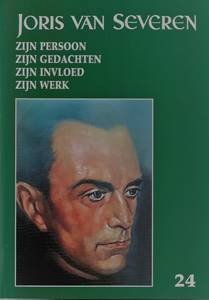
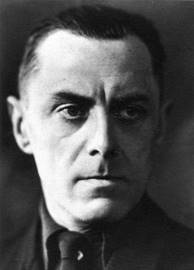

> nieuwsbrief > 2020- nr 3
Inhoud
Het nieuwe Jaarboek Joris van Severen kwam ondertussen
van de pers (zie verderop voor wat de inhoud betreft). Wie tot
op heden naliet zn ledenbijdrage te vereffenen vindt bij dit
nummer andermaal een betaalformulier. Nagaan of u wel dan niet
betaald hebt leest u af op het adresetiket van dit nummer.
Indien u boven uw naam een *-symbool vindt, dan is alles in orde. Ontbreekt
dit *-symbool, dan wijst dit er
op dat we uw bijdrage nog niet mochten boeken.
De minimumbijdrage bleef behouden op 29 . In ruil
daarvoor verzekeren we u de stipte toezending van het nieuwe Jaarboek Jaarboek Joris van
Severen het 24e al van zodra we de achterstallige
bijdrage mogen boeken. Vereffening graag via onze rekening IBAN:
BE71 0001 7058 1469 BIC: BPOTBEB1 t.n.v. Studiecentrum Joris
van Severen, Paddevijverstraat 2, 8900 Ieper.
Raad van
Bestuur Studiecentrum Joris van Severen
Naar
aanleiding van de jongste Algemene Vergadering trad Luc Pauwels
aan als voorzitter. Wido Bourel en Hugo Morael traden toe tot de
Raad van Bestuur. Vik Eggermont werd tot erevoorzitter benoemd.
Jaarboek Joris van Severen 24 (2020)
Met deze
aflevering zijn we aan het 24e Jaarboek Joris van Seveen
toe. De openingsbijdrage is van de hand van ondergetekende en
handelt over Enkele
krachtlijnen in het denken van Joris van Severen. Daarin komt het
jeugdbewegingsfenomeen aan bod met zijn
conservatief-revolutionaire fundamenten als vrijheid, orde en
aristocratische ingesteldheid.
Daarop
sluit Henk Tijssen aan met een vergelijking tussen Het Noord-Nederlandse Nationaal
Verbond en het Zuid-Nederlandse Verdinaso. Met
de auteur dienen we te besluiten dat er onmiskenbaar parallellen
te bespeuren vallen tussen de beide bewegingen.
In
Hans de Goeij, studentenleider,
katholiek revolutionair en Dinaso, gaat
Ruud Bruijns de rol en de verdiensten na, binnen het Nederlandse
studentenleven, het Nederlandse katholicisme en het Verdinaso
van deze merkwaardige persoonlijkheid, die de Verdinaso-idealen
levenslang hoog in het vaandel voerde.
Eerder van documentair
gehalte is het stukje uit de Britse krant, opgevist door Ruud
Bruijns over Joris van
Severen in de ogen van The Catholic Herald.
Een tijdseigen beoordeling die afbreuk doet aan de onzin van wat
heden ten dage veelal over het Verdinaso en zijn leider
gedebiteerd wordt.
Ook over de verhoudingen
en de samenwerking tussen zo verscheiden persoonlijkheden als Joris van Severen en Pierre Nothomb
is nog niet alles gezegd, zoals blijkt uit deze bijdrage van
Ruud Bruijns. Hij zoekt een antwoord op de vraag of Van Severen onder invloed
stond van belgicist Nothomb, of dat Van Severen juist invloed
uitoefende op Nothomb.
Dat de verhoudingen
tussen Ward Hermans en Joris van Severen bij momenten soms
turbulente vormen aannamen blijkt ten volle uit hun
correspondentie. Ook uit De
briefwisseling tussen Joris van Severen en Ward Hermans,
als bijeengesprokkeld door Gui van Gorp en Maurits Cailliau,
blijkt dit overduidelijk. Daarin o.m. boeiende informatie
omtrent Ward Hermans kijk op de in 1928 door Robrecht de Smet
opgerichte Jong Vlaamse Gemeenschap, die daartoe inspiratie
geput had bij het voorbeeld van de Jungdeutsche Orden van Artur
Mahraun in Duitsland. Dat Hermans uit het Verdinaso ontslagen
werd vooraleer zelf ontslag te kunnen nemen zal dan ook wel
niemand verwonderen.
Op zoek naar de wortels van de Orde Joris van
Severen brengt veelal
onbekende gegevens aan als destijds te berde gebracht in een
uiteenzetting van Jef Werkers. Deze bijdrage geeft bovendien een
inkijk op de door Louis Gueuning ondernomen pogingen om de
ideële erfenis van Joris van Severen ongeschonden doorheen de
moeilijke oorlogsjaren te loodsen.
Tenslotte is er nog het
Verhaal gedaan door Jules de
Cock nopens zijn aanhouding, de moordpartij van Abbeville,
enz. ons aangereikt door Jan Verstraete, gewezen
stafhouder van de Antwerpse balie en geannoteerd door onze
jaarboekredactie. Een verhaal dat in de tijd verder reikt dan
alle tot nog toe gekende getuigenissen van de lotgevallen die de
weggevoerden van mei 1940 te verduren kregen.
Afsluiten
doen we als steeds met een gedicht van Fernand Florizoone, dat Vlaanderen - In memoriam Joris van
Severen tot titel kreeg.
Ook voor deze editie van
ons jaarboek konden we andermaal rekenen op de gewaardeerde
medewerking van Frederic van Waeijenberge als onmisbare
tekstcorrector.
Maurits Cailliau
(eindredacteur)
https://reactnieuws.net/2020/06/21/boek-jaarboek-joris-van-severen-24-2020/
Herdenkingen 2020 80 jaar later

Ten gevolge
van de aanhoudende corona-maatregelen die elke niet-essentiële
verplaatsing onmogelijk maakten en mede door de aanhoudende
grenssluiting, dienden alle herdenkingsmomenten, zowel
te Brugge
als te Abbeville, afgelast te worden.
Op
initiatief van de Stichting Joris van Severen werd het
dubbelgraf van
Joris van
Severen en Jan Ryckoort te Abbeville op 20 mei ook dit jaar met
bloemen getooid, dank zij de medewerking van een plaatselijke
bloemmist..
Op 20 mei werd Joris van Severen vermoord
Luc Pauwels
Op 10
mei 1940 vielen Duitse troepen gelijktijdig België, Nederland en
Luxemburg binnen: de Tweede Wereldoorlog voor onze gewesten.
Joris van Severen (°1894), gewezen Vlaams-nationaal
volksvertegenwoordiger (1921-1929) en oprichter van het Verbond
van Dietse Nationaalsolidaristen (1931), reageert met:
Ah, de schurken!.
Dezelfde
dag wordt hij door de Belgische Staatsveiligheid aangehouden,
zonder in beschuldiging te worden gesteld. Ze zijn met honderden
in dat geval: Vlaams-nationalisten, joden, communisten,
rexisten, waaronder Léon Degrelle
Tegen alle rechtsregels in
worden ze gedeporteerd naar verschillende plekken in Frankrijk
en aan de plaatselijke overheid uitgeleverd.
Zonder vorm van proces
Joris
van Severen en zijn vriend Jan Ryckoort, tevens zijn
rechterhand, komen met een groep van enkele tientallen in
Abbeville aan de Somme terecht. Ze worden als beesten behandeld
en opgesloten in een kelder onder een muziekkiosk. Op 20 mei
worden 21 van hen zonder vorm van proces door Franse soldaten
vermoord. Dat het om dronken soldaten zou gegaan zijn, dat
magere excuus blijkt een verzinsel.
Eén
van de gevangenen die het overleefde, de Nederlandse kunstenares
Gaby Warris (1922-2013) schreef er in 1994 een sober,
aangrijpend boek over, Het bloedbad van Abbeville, 20 mei
1940. Ze was net 18 op het ogenblik van de feiten,
politiek helemaal niet betrokken. Tientallen jaren had ze nodig
om er over te kunnen schrijven.
Waarvoor stond het Verdinaso van Joris van
Severen?
We
beschrijven hier enkel de eindfase. De volledige evolutie van
Joris van Severen in kaart brengen, zou een volledig boek vragen
en dat is al geschreven. Na een korte periode van bewondering
voor de bolsjewistische revolutie van Lenin en Trotski
concentreerde de gewezen frontofficier uit de loopgraven aan de
IJzer zich op het eigen land. Een korte tijd bewonderde hij
Mussolini, maar dat is vlug over.
Hij
streeft drie fundamentele veranderingen voor: de eerste is een
politiek herstel van de Verenigde Nederlanden, zoals het laatst
bestond onder koning Willem I (1815-1830). Dat wil zeggen,
inclusief Luxemburg en de Waalse provincies (de Romaanse
gouwen), die moesten bevrijd worden van hun fascinatie voor de
Franse Revolutie. Men heeft dit een Boergondische visie
genoemd, geïnspireerd door de Zeventien Provincies. Het was
zeker een voorafbeelding van Benelux, maar dan met een volledige
staatkundige integratie.
Ten
tweede wil Joris van Severen de maatschappij hervormen op basis
van het solidarisme. Dat is een van oorsprong katholieke
staatsopvatting die werd geëxpliciteerd in de pauselijke
encyclieken Rerum Novarum (1891) en Quadragesimo
Anno (1931), maar waarvan ook protestantse en
niet-religieuze varianten bestaan. Van Severen zelf heeft veel
weg van een gelaïciseerde katholieke traditionalist, met zowel
christendemocratische als conservatieve trekjes.
Afwijzing van zowel het kapitalisme als het
communisme
Zijn
solidarisme houdt een expliciete afwijzing in van zowel het
kapitalisme als het communisme. Want, schrijft Van Severen,
zoals het Verdinaso met alle kracht onmogelijk wil en zal maken:
de heerschappij van het zogenaamde revolutionaire
proletariaat, zo wil en zal het Verdinaso met alle kracht
bekampen en vernietigen: de heerschappij van de bourgeois en van
zijn brandkast-ik-zucht. Tussen de bourgeois-maatschappij en het
communisme, kiest het Verdinaso niet. Het kiest niet tussen de
heerschappij van het geld van de ene kant en de gelijkheid in de
ellende van de andere kant (22.8.1936).
De
democratie schoot zich tijdens het interbellum zelf
herhaaldelijk in de voet. Tussen 21 november 1918 en 28 mei 1940
telde België maar liefst zeventien regeringen, waarvan sommige
het maar zeer kort uithielden. Het record werd gebroken door de
regering Pierlot I, die in 1939 precies zes (!) dagen aan het
roer stond. Koning Leopold III riep de politieke partijen
herhaaldelijk tot de orde, wat hem na de Tweede Wereldoorlog
zwaar werd aangerekend. In deze context kreeg de door het
Verdinaso voorgestane orde een heel andere perceptie.
Aristocratisch
De
derde pijler van de ideologie van Joris van Severen is een ethische
en daardoor - in ons huidig tijdsgewricht - de minst begrepen
component. Hij streefde naar een aristocratische levenshouding,
elitair, maar niet arrogant of egocentrisch, en dus vooral: ten
dienste van de gemeenschap. De kern ervan was een Plus est
en vous, de levenslange inspanning naar een ethisch
hogerop, met duidelijk Spartaanse trekjes. Daarin was
uitdrukkelijk plaats voorzien voor de arbeiders, de
aristocratie van de gewetensvolle arbeid (30.4.1938). Hij
heeft zijn aanhangers in het Verdinaso aangegrepen in heel de
sfeer van hun leven, privé en politiek, stelt Lode Wils. Zij
wilden zijn zoals Van Severen was of zoals Van Severen wilde dat
zij zouden worden. Zij werden aangegrepen door de innerlijke
wilskracht van deze man die, in dagelijkse strijd met eigen
twijfel en verscheurdheid, de indruk gaf van absolute waarheid
en zekerheid, telkens als hij zijn opvattingen uiteenzette of
zijn volgelingen toesprak.
Na zijn dood
Het
Verdinaso van Joris van Severen, was te zeer zijn persoonlijke
schepping om hem echt te kunnen overleven. Voor de moeilijke
keuze gesteld welke politieke weg het zou volgen onder de Duitse
bezetting viel het na enkele stuiptrekkingen uiteen in
verschillende fracties. Die kan men oppervlakkig etiketteren als
collaborerend of niet-collaborerend, maar het is beter ze
zorgvuldiger te omschrijven. We beperken ons hier tot de meest
bekende kaderleden van het Verdinaso.
De
omstandigheden van zijn dood deden de oude anti-Belgische
gevoelens weer hoog oplaaien. In de radicale collaboratie
(Algemene SS-Vlaanderen) vinden we Jef François terug, Pol le
Roy, Jef de Langhe e.a. Bij het VNV: Albert Deckmyn, Albert
Derbecourt, Leo Poppe e.a. Naar het Oostfront vertrokken o.m.
Kamiel de Wilde, Leo Verbeke en de uit het Verdinaso uitgesloten
Reimond Tollenaere. Paul Persyn, Willem Melis, Lode Claes, Pol
van Herzele e.a. namen belangrijke posten in het open-bare
bestuur en de Belgische administratie van de
secretarissen-generaal onder de bezetting in. Andere
oud-Dinasos wilden van geen collaboratie met de bezetter weten
en werden actief in het verzet, zo o.m. Jef van Bilsen, Frantz
van Dorpe, Pol van Herzeele en Albert Brienen. De Waalse
Dinaso-verantwoordelijke Louis Gueuning (1898-1971) handhaaft
een strikte politieke neutraliteit en specialiseert zich, samen
met André Belmans en anderen, in het hoeden van de nagedachtenis
van Joris van Severen door de uitgave van vele clandestiene
geschriften en het organiseren van vormingscursussen. Een aantal
medestichters van het Verdinaso trekt zich, na met lede ogen de
complete desintegratie van hun beweging te hebben aanzien,
volledig in het privéleven terug. Zo Emiel Thiers en Juul
Declercq.
Oud-Dinasos in de naoorlogse politiek
Een circulaire van minister van Justitie Maurice Vervaet wees er bij de bevrijding op dat het lidmaatschap van het Verdinaso geen strafbaar feit was. Sommige oud-Dinasos zullen na de Tweede Wereldoorlog weer politiek actief worden. Kleine herstichtingspogingen lopen allemaal en snel op een sisser uit. Slechts in twee politieke families komen oud-Dinasos duidelijk weer aan trek: in de CVP en in het Vlaams-nationalisme. Wim Melis wordt in 1947 de eerste hoofdredacteur van De Standaard, Jef van Bilsen (1913-1996) wordt o.m. secretaris van het Centrum Harmel, door het parlement opgericht om de communautaire problemen in België te onderzoeken. Frantz van Dorpe (1906-1990) brengt het tot burgemeester van Sint-Niklaas-Waas. Raf Renard (1911-2002) wordt in 1964 door het parlement benoemd tot de eerste voorzitter van de Vaste Commissie voor Taaltoezicht. Ir. Fritz A. Donckerwolcke (1912-1988) wordt in 1949 voorzitter van de Vlaamse Concentratie, de eerste naoorlogse Vlaams-nationale partij. Jef François (1901-1996) zal een tijd vrijgestelde zijn van de Volksunie in het Antwerpse. Lode Claes (1913-1997) wordt in 1958 secretaris-generaal van de Economische Raad van Vlaanderen, daarna senator van de <